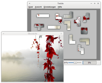

Tetzle
Dieser Artikel wurde für die folgenden Ubuntu-Versionen getestet:
Ubuntu 16.04 Xenial Xerus
Ubuntu 14.04 Trusty Tahr
Zum Verständnis dieses Artikels sind folgende Seiten hilfreich:
Wer gerne puzzelt und Picsaw zu einfach findet, kann sein Glück mit Tetzle  versuchen. Als Puzzlesteine dienen hier die aus dem Spiel Tetris bekannten Formen. Als Vorlage dient ein beliebiges Bild, das in bis zu 972 Tetrominos zerlegt werden kann. Da die Einzelteile teilweise erst gedreht werden müssen, bevor der Zusammenschluss mit anderen Teilen klappt, ist der Schwierigkeitsgrad um einiges höher.
versuchen. Als Puzzlesteine dienen hier die aus dem Spiel Tetris bekannten Formen. Als Vorlage dient ein beliebiges Bild, das in bis zu 972 Tetrominos zerlegt werden kann. Da die Einzelteile teilweise erst gedreht werden müssen, bevor der Zusammenschluss mit anderen Teilen klappt, ist der Schwierigkeitsgrad um einiges höher.
Tetzle ist plattformübergreifend verfügbar, der Quelltext frei erhältlich (Open Source) und der Programmautor Graeme Gott freut sich über jede Spende.
Installation¶
Das Programm ist in den offiziellen Paketquellen enthalten. Folgendes Paket muss installiert [1] werden:
tetzle (universe)
 mit apturl
mit apturl
Paketliste zum Kopieren:
sudo apt-get install tetzle
sudo aptitude install tetzle
PPA¶
Ab Ubuntu 14.04 steht eine aktuellere Version über das "Personal Package Archiv" (PPA) [2] des Entwicklers zur Verfügung.
Adresszeile zum Hinzufügen des PPAs:
ppa:gottcode/gcppa
Hinweis!
Zusätzliche Fremdquellen können das System gefährden.
Ein PPA unterstützt nicht zwangsläufig alle Ubuntu-Versionen. Weitere Informationen sind der  PPA-Beschreibung des Eigentümers/Teams gottcode zu entnehmen.
PPA-Beschreibung des Eigentümers/Teams gottcode zu entnehmen.
Damit Pakete aus dem PPA genutzt werden können, müssen die Paketquellen neu eingelesen werden.
Nach dem Aktualisieren der Paketquellen erfolgt die Installation wie oben angegeben.
Bedienung¶
Bei Ubuntu-Varianten mit einem Anwendungsmenü erfolgt der Programmstart [3] über den Menü-Eintrag "Spiele -> Tetzle". Unter Unity gibt man stattdessen den Programmnamen in der Dash ein.

Beim Programmstart erfolgt über "Spiel auswählen" eine Nachfrage, welches Puzzle (weiter)bearbeitet werden soll. Ist noch keins angelegt worden, trifft man die Auswahl eines Motivs über das Symbol . Als Name wird der Dateiname verwendet, was aber geändert werden kann, um beispielsweise die Anzahl der Einzelteile sofort ersichtlich zu machen. Apropos Einzelteile: am unteren Fensterrand kann über einen Schieberegler festgelegt werden, in wie viele Einzelteile das Motiv zerlegt werden soll (minimal 12).
Die Spielsteuerung erfolgt über die beiden Maustasten. Vereinfacht ausgedrückt, wählt ein Linksklick  ein Puzzleteil aus, das dann entweder mit der rechte Maustaste im Uhrzeigersinn gedreht oder an geeigneterer Stelle abgelegt werden kann. Ein weiterer Linksklick deselektiert den Puzzlestein wieder. Zusammenpassende Teile haften automatisch einander und können als Ganzes verschoben werden.
ein Puzzleteil aus, das dann entweder mit der rechte Maustaste im Uhrzeigersinn gedreht oder an geeigneterer Stelle abgelegt werden kann. Ein weiterer Linksklick deselektiert den Puzzlestein wieder. Zusammenpassende Teile haften automatisch einander und können als Ganzes verschoben werden.
Mit der Taste F1 kann man jederzeit weitere Steuerungselemente anzeigen lassen, während die Tabulatortaste Tab ⇆ eine Motiv-Vorschau ein- bzw. ausblendet. Insbesondere bei Motiven mit einheitlichen Flächen ohne große Farbunterschiede kann bereits die kleinste Variante mit 12 Einzelteilen eine Herausforderung darstellen. Glücklicherweise braucht man ein Puzzle nicht in einer Sitzung lösen. Beim nächsten Programmstart wird der bereits erreichte Stand wieder geladen.
Einstellungen¶
Das Aussehen der Puzzleteile und die verwendeten Farben können über "Einstellungen -> Erscheinungsbild" beeinflusst werden. Ob man die Effekte "Abgeschrägte Kanten" und "Schlagschatten" benötigt, bleibt dem persönlichen Geschmack überlassen. Falls man zu viel herumexperimentiert hat, hilft die Schaltfläche "Voreinstellungen", alle Optionen wieder zurückzusetzen.
Wenn die Sprache der Programmoberfläche nicht der eigenen Systemsprache entspricht oder eine andere gewünscht ist, kann "Einstellungen -> Sprache" verwendet werden. Anschließend muss das Programm neu gestartet werden.
Alle Einstellungen werden in der Datei ~/.config/GottCode/Tetzle.conf gespeichert.
Problembehebung¶
Ungeeignete Grafikkarte¶
Da das Programm etwas wählerisch in Hinblick aus die verwendete Grafikkarte ist, kann es passieren, dass Tetzle keine Puzzlesteine anzeigt. Dies kann durch den Start in einem Terminalfenster [4] verifiziert werden:
tetzle
Taucht hier eine Fehlermeldung wie z.B.
"QGLShader: could not create shader"
auf, ist die Grafikkarte nicht für Tetzle geeignet.
 Programmübersicht
Programmübersicht- Erstellt mit Inyoka
-
 2004 – 2017 ubuntuusers.de • Einige Rechte vorbehalten
2004 – 2017 ubuntuusers.de • Einige Rechte vorbehalten
Lizenz • Kontakt • Datenschutz • Impressum • Serverstatus -
Serverhousing gespendet von